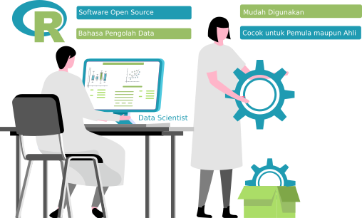

Dasar-dasar Pemograman R
Data Scientist dan R
Data Scientist merupakan profesi yang sangat menjanjikan saat ini. Sebagai seorang data scientist tentunya kamu akan bekerja dengan cara merubah data-data yang sebelumnya tidak kelihatan berguna menjadi informasi yang berharga. Untuk mewujudkan hal itu, seorang data scientist memerlukan tool (kakas atau peralatan) dalam bentuk sebuah perangkat lunak (software). Software yang diperlukan diusahakan cukup simpel namun kuat (simple but powerful) dalam penggunaannya. Nah, software yang dimaksud itu dinamakan dengan R. R merupakan software pemrograman untuk pengolahan dan pemodelan berbasis data.
Apa dan kenapa R?
R adalah nama sebuah bahasa pemrograman sekaligus software untuk pengolahan data dan grafik.R sangat popular saat ini karena tiga hal berikut:
- Banyak pilihan pengolahan data dengan jumlah fitur yang sangat komplit - dari grafik sampai machine learning.
- Lebih cepat dipelajari dan dijalankan untuk mengolah data dibandingkan dengan bahasa lain.
- R bersifat gratis dan open source yang artinya, tidak perlu biaya lisensi yang biasanya sangat mahal untuk software pengolahan data.
Perusahaan mana yang sudah menggunakan R?
Tidak ada asap tanpa api", demikian suatu peribahasa yang berarti tidak ada rumor tanpa ada fakta yang menyertainya. Kepopuleran bahasa R disebabkan karena penggunaannya pada berbagai perusahaan besar dunia.Perusahaan besar yang dimaksud diantaranya adalah AirBnB untuk data science, Microsoft untuk menambahkan fungsionalitas di produk-produknya, Uber untuk analisa statistik, Facebook untuk behavior analysis, dan lain-lain.
"Hello World" di R

Praktek: Perhitungan Sederhana

Variabel dalam R